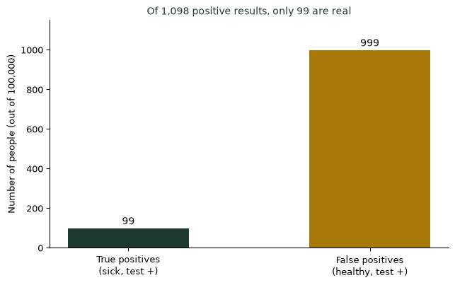
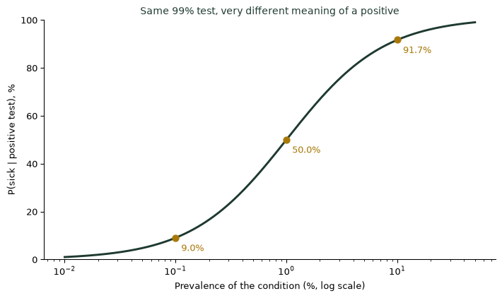

(조건부확률과 베이즈의 사고) 검사 결과가 양성이면 정말 병에 걸린 것일까? — 기저율
통계기초
확률
정확도 99%인 검사에서 양성이 나왔다. 병에 걸렸을 확률은 99%일까? 1,000명에 1명꼴인 병이라면 답은 9%다. 검사가 얼마나 정확한지보다 먼저 봐야 할 것은 그 병이 원래 얼마나 흔한지, 곧 기저율이다.
99%나 맞는 검사인데, 양성이면 99%일까
건강검진에서 “정확도 99%”라는 검사를 받았더니 양성이 나왔다. 그렇다면 병에 걸렸을 확률은 99%일까? 많은 사람이 그렇게 생각하고 크게 놀란다. 그런데 계산해 보면 답은 9%에 가깝다. 검사가 틀릴 가능성은 1%뿐인데 왜 이런 결과가 나올까? 답은 검사 자체보다 그 병이 인구 속에서 얼마나 흔한가, 곧 기저율(base rate)에 있다.
10만 명을 세어 보면 보인다
병의 유병률을 0.1%, 곧 1,000명에 1명이라고 하자. 검사는 병에 걸린 사람을 99% 찾아내고(민감도 99%), 건강한 사람을 99% 정상으로 판정한다(특이도 99%). 10만 명을 검사하면 다음과 같다.
- 실제로 병이 있는 사람: 100명 → 검사 양성 99명(정확히 찾음)
- 병이 없는 사람: 99,900명 → 1%인 999명이 잘못 양성
양성 판정은 모두 1,098명이고, 그중 진짜 환자는 99명뿐이다. 따라서 양성 결과를 받은 사람이 실제로 병에 걸렸을 확률은 \(99/1098\approx9.0\%\)다.
기저율이 바뀌면 같은 검사의 의미도 바뀐다
같은 99% 검사라도 병이 얼마나 흔한지에 따라 양성의 의미가 완전히 달라진다. 유병률이 1%면 양성이 나왔을 때 확률은 50%로 뛰고, 10%면 92%에 이른다. 검사의 정확도는 고정되어 있는데, 양성 결과를 해석하는 확률은 기저율에 따라 움직인다.

양성을 어떻게 읽을 것인가
검사 결과를 받았을 때 던져야 할 질문은 “이 검사가 얼마나 정확한가?”가 아니라 “이 검사를 받은 사람들 중에서 병이 얼마나 흔한가?”다. 증상이 있어 병원에 온 사람에게는 기저율이 높으므로 양성의 의미가 크다. 증상 없이 무작위로 받은 대규모 선별검사에서는 기저율이 낮으므로, 양성이라도 확진 검사로 한 번 더 확인하는 것이 합리적이다.
검사 결과를 읽을 때 확인할 것
- 기저율부터 물어라. 병이 전체 인구에서 얼마나 흔한지가 양성의 의미를 정한다.
- 10만 명 같은 큰 집단을 세어 보라. 진짜 양성과 거짓 양성의 수를 나란히 놓으면 직관이 바로잡힌다.
- 민감도와 특이도를 구분하라. 민감도는 환자 중 양성 비율, 특이도는 건강한 사람 중 음성 비율이다.
- 선별검사의 양성은 확진이 아니다. 낮은 기저율에서는 확진 검사를 한 번 더 받는 것이 기본이다.
더 깊이: 특이도와 민감도
강의노트 〈수리통계학 1. 확률론 — 특이도와 민감도〉는 검사의 민감도와 특이도를 조건부확률로 정의하고, 이를 이용해 양성 예측도를 계산하는 방법을 소개한다. 오늘 계산이 바로 그 절차다. 민감도 \(P(+\mid D)\)와 양성 예측도 \(P(D\mid +)\)는 서로 다른 조건부확률이다.
SDV 관점: 지표의 정확도보다 모집단의 기저율을 먼저 설계하라
기저율을 무시하는 실수는 요약과 추론(1~2단계)의 가장 흔한 오류이며, SDV(통계적 데이터 가치화) 관점에서는 의사결정의 비용을 좌우한다. 사기 탐지, 이탈 예측, 불량 탐지 모델이 “정확도 99%”라고 발표되어도, 실제로 문제가 되는 사례가 전체의 0.1%라면 경보의 대부분은 거짓이다. 모델의 가치는 정확도 숫자가 아니라 기저율 아래에서의 양성 예측도와 경보 처리 비용으로 측정되어야 한다. 데이터를 결정으로 바꾸는 일은 그 숫자가 어떤 모집단에서 나왔는지를 먼저 밝히는 데서 시작한다. (SDV(데이터 가치화))
결론: 양성은 답이 아니라 질문의 시작이다
나는 학생들에게 검사 결과를 들으면 “정확도가 몇 %인가”보다 먼저 “이 병은 얼마나 흔한가”를 묻게 한다. 정확도 99%의 검사가 양성을 알려주면, 그것은 병이 있다는 뜻이 아니라 한 번 더 확인해야 한다는 신호다.
참고 자료
- 민감도·특이도 예시(99%, 유병률 0.1%)는 설명을 위한 가상의 숫자다. 실제 검사의 성능은 검사 종류와 조건에 따라 크게 다르다.
- 신속항원검사의 임상 민감도가 공식 수치보다 낮게 보고된 논란은 다음 기사를 참고했다: 신속항원검사 민감도 이슈 쟁점화 — 메디칼타임즈